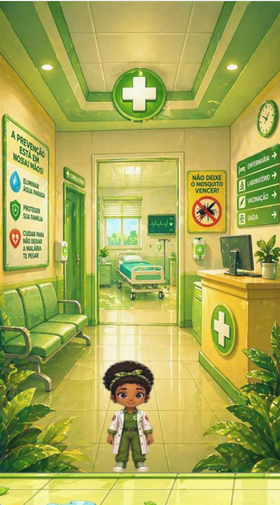
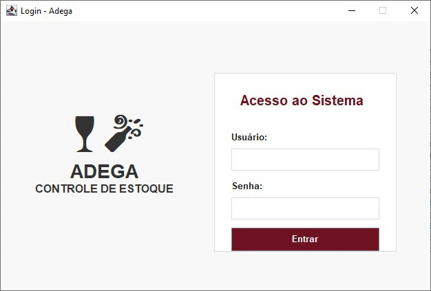
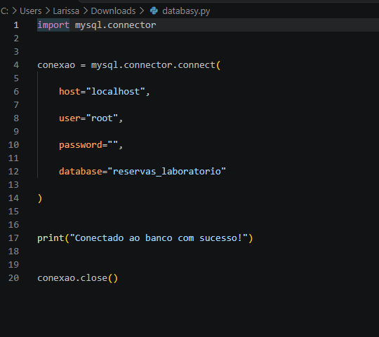

Painel administrativo
| ID | Nome | Mensagem |
|---|
Olá meu nome é Larissa Veridiano, sou estudante do 3º ano do Ensino Médio Técnico em Tecnologia da Informação pelo Senac Nações Unidas. Tenho conhecimentos em informática, Pacote Office, lógica de programação e desenvolvimento de sistemas, além de conhecimentos básicos em HTML, Java e banco de dados. Sou uma pessoa responsável, organizada, dedicada e tenho facilidade para aprender coisas novas. Gosto de trabalhar em equipe, enfrentar desafios e adquirir novos conhecimentos. Busco desenvolver minhas habilidades profissionais e ampliar minha experiência na área de Tecnologia da Informação, contribuindo com criatividade, comprometimento e vontade de aprender.
Ciências Humanas contribuíram para minha formação ao desenvolver meu pensamento crítico, minha capacidade de analisar situações e compreender diferentes realidades. Esses conhecimentos são importantes na programação, pois ajudam a entender as necessidades das pessoas e criar sistemas que facilitem o dia a dia. Também aprendi a trabalhar melhor em equipe, respeitar diferentes opiniões e buscar soluções para problemas.
Ciências da Natureza desenvolveram minha capacidade de observação, investigação e resolução de problemas. Por meio de atividades e experimentos, aprendi a analisar situações, levantar hipóteses e buscar explicações. Essas habilidades se relacionam com a programação, principalmente na identificação de erros, realização de testes e desenvolvimento de soluções eficientes.
Matemática teve uma grande importância no desenvolvimento da minha lógica de programação. Por meio dos cálculos, raciocínio lógico, interpretação de problemas e identificação de padrões, consegui desenvolver habilidades fundamentais para criar algoritmos e compreender a estrutura dos códigos. Esse conhecimento também me ajudou a trabalhar com condições, variáveis e resolução de problemas durante o desenvolvimento de sistemas.
Linguagens contribuíram para melhorar minha comunicação, interpretação de textos e organização de ideias. Essas habilidades são importantes na área de TI, pois permitem compreender melhor as instruções de projetos, documentar sistemas e explicar o funcionamento de programas. Além disso, o contato com a Língua Inglesa ajudou na compreensão de termos técnicos e comandos utilizados na programação.
Ao longo da minha formação em Tecnologia da Informação, compreendi a importância da segurança digital para proteger dados, informações pessoais e sistemas. A cibersegurança está presente em diversas atividades do cotidiano, como o uso de senhas, aplicativos e sites. Esse conhecimento me mostrou a importância de desenvolver sistemas seguros, identificar possíveis ameaças e utilizar a tecnologia com responsabilidade.
O estudo sobre Blockchain me permitiu conhecer uma tecnologia que possibilita registrar e compartilhar informações de maneira segura e transparente. Entendi que ela funciona como uma espécie de registro digital, no qual os dados são organizados em blocos conectados. Esse conhecimento ampliou minha visão sobre as possibilidades da tecnologia, principalmente nas áreas de segurança, armazenamento de informações e desenvolvimento de sistemas.
A automação e a robótica me mostraram como a tecnologia pode facilitar tarefas e otimizar processos por meio de sistemas programados para executar determinadas funções. Durante minha formação em TI, desenvolvi conhecimentos de lógica de programação e resolução de problemas, que estão diretamente relacionados a essas áreas. Aprendi que a programação permite criar soluções capazes de realizar atividades de forma automática, reduzindo trabalhos repetitivos e aumentando a eficiência.
O estudo sobre Edge Computing ampliou meu conhecimento sobre as diferentes formas de processamento de dados. Aprendi que essa tecnologia permite processar informações mais próximas de onde são geradas, sem depender exclusivamente de servidores distantes ou da nuvem. Isso pode reduzir o tempo de resposta e melhorar o funcionamento de dispositivos conectados. Esse conteúdo me ajudou a compreender melhor a evolução da tecnologia e sua aplicação em sistemas inteligentes e na Internet das Coisas (IoT).



| ID | Nome | Mensagem |
|---|